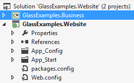

By default when you install Glass.Mapper using the Glass.Mapper.Sc.CastleWindsor project the Nuget package will insert code that will automatically load classes configured with attributes from the current assembly. For example I have the following solution setup:
If I install the Glass.Mapper.Sc.CastleWindsor nuget into the GlassExamples.Website project and then looking the App_Start/GlassMapperScCustom class we can find the code that loads classes with attributes:
public static IConfigurationLoader[] GlassLoaders(){
var attributes = new SitecoreAttributeConfigurationLoader("GlassExamples.Website");
return new IConfigurationLoader[]{attributes};
}
However you may also want to load classes configured with attributes from another assembly for example the GlassExamples.Business assembly. This can be simply achieved by adding another SitecoreAttributeConfigurationLoader and adding this to the returned array:
public static IConfigurationLoader[] GlassLoaders(){
var attributes = new SitecoreAttributeConfigurationLoader("GlassExamples.Website");
var attributes2 = new SitecoreAttributeConfigurationLoader("GlassExamples.Business");
return new IConfigurationLoader[]{attributes, attributes2};
}
You can also configure you fluent configuration loaders here as well, see Tutorial 8 - Fluent configuration